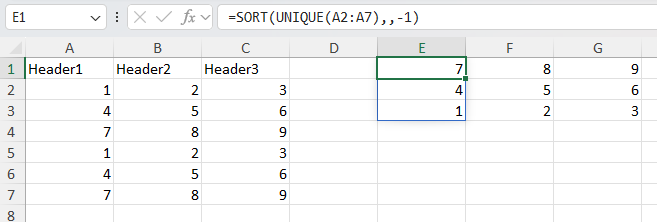

Cells and data
Cell referencing
XLSX.CellRef — Type
CellRef(n::AbstractString)
CellRef(row::Int, col::Int)A CellRef represents a cell location given by row and column identifiers.
CellRef("B6") indicates a cell located at column 2 and row 6.
These row and column integers can also be passed directly to the CellRef constructor: CellRef(6,2) == CellRef("B6").
Finally, a convenience macro @ref_str is provided: ref"B6" == CellRef("B6").
Examples
cn = XLSX.CellRef("AB1")
println( XLSX.row_number(cn) ) # will print 1
println( XLSX.column_number(cn) ) # will print 28
println( string(cn) ) # will print out AB1
println( cellname(cn) ) # will print out AB1
cn = XLSX.CellRef(1, 28)
println( XLSX.row_number(cn) ) # will print 1
println( XLSX.column_number(cn) ) # will print 28
println( string(cn) ) # will print out AB1
println( cellname(cn) ) # will print out AB1
cn = XLSX.ref"AB1"
println( XLSX.row_number(cn) ) # will print 1
println( XLSX.column_number(cn) ) # will print 28
println( string(cn) ) # will print out AB1
println( cellname(cn) ) # will print out AB1XLSX.row_number — Function
row_number(c::CellRef) :: IntReturns the row number of a given cell reference.
XLSX.column_number — Function
column_number(c::CellRef) :: IntReturns the column number of a given cell reference.
XLSX.eachrow — Function
eachrow(sheet)Creates a row iterator for a worksheet.
Base.eachrow(sheet::Worksheet) is defined as a synonym of XLSX.eachrow(sheet::Worksheet)
Example: Query all cells from columns 1 to 4.
left = 1 # 1st column
right = 4 # 4th column
for sheetrow in eachrow(sheet)
for column in left:right
cell = XLSX.getcell(sheetrow, column)
# do something with cell
end
endThe eachrow row iterator will not return any row that consists entirely of EmptyCells. These empty rows are not represented in the .xlsx file and are therefore not seen by the iterator. The length(eachrow(sheet)) function returns the number of rows that are not entirely empty and will, in any case, only succeed if the worksheet cache is in use.
XLSX.eachtablerow — Function
eachtablerow(sheet,
[columns];
[first_row],
[column_labels],
[header],
[stop_in_empty_row],
[stop_in_row_function],
[keep_empty_rows],
[normalizenames],
[missing_strings]
) -> TableRowIteratorConstructs an iterator of table rows. Each element of the iterator is of type TableRow.
header is a boolean indicating whether the first row of the table is a table header.
If header == false and no column_labels were supplied, column names will be generated following the column names found in the Excel file.
The columns argument is a column range, as in "B:E". If columns is not supplied, the column range will be inferred by the non-empty contiguous cells in the first row of the table.
The user can replace column names by assigning the optional column_labels input variable with a Vector{Symbol}.
stop_in_empty_row is a boolean indicating whether an empty row marks the end of the table. If stop_in_empty_row=false, the iterator will continue to fetch rows until there's no more rows in the Worksheet. The default behavior is stop_in_empty_row=true. Empty rows may be returned by the iterator when stop_in_empty_row=false.
stop_in_row_function is a Function that receives a TableRow and returns a Bool indicating if the end of the table was reached. The row that satisfies stop_in_row_function is excluded from the table.
Example for stop_in_row_function:
function stop_function(r)
v = r[:col_label]
return !ismissing(v) && v == "unwanted value"
endkeep_empty_rows determines whether rows where all column values are equal to missing are kept (true) or skipped (false) by the row iterator. keep_empty_rows never affects the bounds of the iterator; the number of rows read from a sheet is only affected by first_row, stop_in_empty_row and stop_in_row_function (if specified). keep_empty_rows is only checked once the first and last row of the table have been determined, to see whether to keep or drop empty rows between the first and the last row.
normalizenames controls whether column names will be "normalized" to valid Julia identifiers. By default, this is false. If normalizenames=true, then column names with spaces or that start with numbers will be adjusted with underscores to become valid Julia identifiers. This is useful when you want to access columns via dot-access or getproperty, like file.col1. The identifier that comes after the . must be valid, so spaces or identifiers starting with numbers aren't allowed. (Based on CSV.jl's CSV.normalizename.)
missing_strings can be used to specify strings that should be interpreted as missing values in the resulting table. missing_strings can be a single string or a vector of strings. The default value is missing_strings=nothing.
Example code:
for r in XLSX.eachtablerow(sheet)
# r is a `TableRow`. Values are read using column labels or numbers.
rn = XLSX.row_number(r) # `TableRow` row number.
v1 = r[1] # will read value at table column 1.
v2 = r[:COL_LABEL2] # will read value at column labeled `:COL_LABEL2`.
endSee also XLSX.gettable.
eachtablerow(t::Table) -> XLSXTableRowIteratorIterate over the data rows of an Excel Table t (as returned by XLSX.table). Each element is an XLSXTableRow.
Different from XLSX.eachtablerow(sheet, ...), which infers a table's bounds from cell content. Here, t.ref is authoritative: the header and totals row (if any) are always excluded, and any blank row within t.ref is still returned as ordinary data — there's no stop_in_empty_row/keep_empty_rows equivalent.
Each XLSXTableRow has a row_number field holding its row number on the worksheet. This is not the same as the XLSX.row_number function applied to a TableRow (from XLSX.eachtablerow(sheet, ...)), which is the row's index within the table. There is deliberately no row_number method for XLSXTableRow: use enumerate for the position within the table, and the row_number field for the worksheet row.
Cell values are read on demand via XLSX.getdata, through the worksheet's normal cell cache — no separate caching, so edits made before iterating are reflected normally.
Rows conform to Tables.jl and t itself is directly Tables.jl-compatible too (DataFrame(t) works without eachtablerow). For or row-by-row iteration, use.
Example
for r in XLSX.eachtablerow(t)
v1 = r[1] # by column position
v2 = r[:revenue] # by column label
v3 = r["unit cost"] # by column label as a string, for names that aren't
# valid identifiers
end(Rows also support indexing with Tables.getcolumn(r, 1) / Tables.getcolumn(r, :revenue), too)
julia> using DataFrames
julia> DataFrame(XLSX.eachtablerow(t)) # equivalent to DataFrame(t)
julia> collect(XLSX.eachtablerow(t)) # Vector{XLSX.XLSXTableRow}See also XLSX.table, XLSX.tables, XLSX.gettable.
Cell data
XLSX.readdata — Function
readdata(source, sheet, ref)
readdata(source, sheetref)Return a scalar, vector or matrix with values from a spreadsheet file. ref` can be a defined name, a cell reference or a cell, column, row or non-contiguous range.
See also XLSX.getdata.
Examples
These function calls are equivalent.
julia> XLSX.readdata("myfile.xlsx", "mysheet", "A2:B4")
3×2 Array{Any,2}:
1 "first"
2 "second"
3 "third"
julia> XLSX.readdata("myfile.xlsx", 1, "A2:B4")
3×2 Array{Any,2}:
1 "first"
2 "second"
3 "third"
julia> XLSX.readdata("myfile.xlsx", "mysheet!A2:B4")
3×2 Array{Any,2}:
1 "first"
2 "second"
3 "third"Non-contiguous ranges return vectors of Array{Any, 2} with an entry for every non-contiguous (comma-separated) element in the range.
julia> XLSX.readdata("customXml.xlsx", "Mock-up", "Location") # `Location` is a `definedName` for a non-contiguous range
4-element Vector{Matrix{Any}}:
["Here";;]
[missing;;]
[missing;;]
[missing;;]XLSX.getdata — Function
getdata(sheet, ref)
getdata(sheet, row, column)Returns a scalar, matrix or a vector of matrices with values from a spreadsheet.
ref can be a cell reference or a range or a valid defined name.
If ref is a single cell, a scalar is returned.
Most ranges are rectangular and will return a 2-D matrix (Array{AbstractCell, 2}). For row and column ranges, the extent of the range in the other dimension is determined by the worksheet's dimension.
A non-contiguous range (which may not be rectangular) will return a vector of Array{AbstractCell, 2} matrices with one element for each non-contiguous (comma separated) element in the range.
Indexing in a Worksheet will dispatch to getdata method.
Example
julia> f = XLSX.readxlsx("myfile.xlsx")
julia> sheet = f["mysheet"] # Worksheet
julia> matrix = sheet["A1:B4"] # CellRange
julia> matrix = sheet["A:B"] # Column range
julia> matrix = sheet["1:4"] # Row range
julia> matrix = sheet["Contiguous"] # Named range
julia> matrix = sheet[1:30, 1] # use unit ranges to define rows and/or columns
julia> matrix = sheet[[1, 2, 3], 1] # vectors of integers to define rows and/or columns
julia> vector = sheet["A1:A4,C1:C4,G5"] # Non-contiguous range
julia> vector = sheet["Location"] # Non-contiguous named range
julia> scalar = sheet[2, 2] # Cell "B2"
See also XLSX.readdata.
getdata(t::Table) -> Matrix{Any}Return the data rows of Excel Table t (as returned by XLSX.table) as a row × column matrix. The header row and, if present, the totals row are excluded — only the table's data body is returned, in the same column order as t.columns.
Example
julia> t = XLSX.table(sheet, "Sales")
julia> XLSX.getdata(t)
3×2 Matrix{Any}:
1000 "North"
1500 "South"
900 "East"See also XLSX.table, XLSX.eachtablerow.
getdata(ws::Worksheet, cell::Cell) :: CellValueReturns a Julia representation of a given cell value. The result data type is chosen based on the value of the cell as well as its style.
For example, date is stored as integers inside the spreadsheet, and the style is the information that is taken into account to chose Date as the result type.
For numbers, if the style implies that the number is visualized with decimals, the method will return a float, even if the underlying number is stored as an integer inside the spreadsheet XML.
If cell has empty value or empty String, this function will return missing.
XLSX.getcell — Function
getcell(xlsxfile, cell_reference_name) :: AbstractCell
getcell(worksheet, cell_reference_name) :: AbstractCell
getcell(sheetrow, column_name) :: AbstractCell
getcell(sheetrow, column_number) :: AbstractCellReturns the internal representation of a worksheet cell.
Returns XLSX.EmptyCell if the cell has no data.
getcell(sheet, ref)
getcell(sheet, row, col)Return an AbstractCell that represents a cell in the spreadsheet. Return a 2-D matrix as Array{AbstractCell, 2} if ref is a rectangular range. For row and column ranges, the extent of the range in the other dimension is determined by the worksheet's dimension. A non-contiguous range (which may not be rectangular) will return a vector of Array{AbstractCell, 2} with one element for each non-contiguous (comma separated) element in the range.
If ref is a range, getcell dispatches to getcellrange.
Example:
julia> xf = XLSX.readxlsx("myfile.xlsx")
julia> sheet = xf["mysheet"]
julia> cell = XLSX.getcell(sheet, "A1")
julia> cell = XLSX.getcell(sheet, 1:3, [2,4,6])
Other examples are as getdata().
XLSX.getcellrange — Function
getcellrange(sheet, rng)Return a matrix with cells as Array{AbstractCell, 2}. rng must be a valid cell range, column range or row range, as in "A1:B2", "A:B" or "1:2", or a non-contiguous range. For row and column ranges, the extent of the range in the other dimension is determined by the worksheet's dimension. A non-contiguous range (which may not be rectangular) will return a vector of Array{AbstractCell, 2} with one element for each non-contiguous (comma separated) element in the range.
Example:
julia> ncr = "B3,A1,C2" # non-contiguous range, "out of order".
"B3,A1,C2"
julia> XLSX.getcellrange(f[1], ncr)
3-element Vector{Matrix{XLSX.AbstractCell}}:
[XLSX.Cell(B3, 0x0000000000000018, 0x00000000, 0x0000, XLSX.CT_INT, false);;]
[XLSX.Cell(A1, 0x0000000000000018, 0x00000000, 0x0000, XLSX.CT_INT, false);;]
[XLSX.Cell(C2, 0x0000000000000018, 0x00000000, 0x0000, XLSX.CT_INT, false);;]
XLSX.iserror — Method
iserror(s::Worksheet, ref::AbstractString)
iserror(s::Worksheet, rows, cols)Returns true if the cell(s) at the given reference contain an error, false otherwise. An EmptyCell is not considered an error and returns false.
The return type depends on the type of ref and is the same shape as the return type of getcell for the same ref:
- If
refor (row,col) refers to a single cell, returns a single Bool. - If
refor (rows,cols) refers to a range of cells, returns a matrix of Bools. - If
refor (rows,cols) refers to a non-contiguous range of cells, returns a vector of matrices of Bools.
Examples
julia> XLSX.iserror(sh, "A1") # Cell
true
julia> XLSX.iserror(sh, "I1") # EmptyCell
false
julia> XLSX.iserror(sh, "A1:I1") # CellRange - note that I1 is an EmptyCell, which is not an error
1×9 Matrix{Bool}:
1 1 1 1 1 1 1 1 0
julia> XLSX.iserror(sh, "A1:B1,D1:E1") # non-contiguous range
2-element Vector{Matrix{Bool}}:
[1 1]
[1 1]See also XLSX.geterror, XLSX.getcell.
XLSX.geterror — Method
geterror(s::Worksheet, ref::AbstractString)
geterror(s::Worksheet, rows, cols)Returns the error value (e.g. #DIV/0!) for the cell(s) at the given reference, if any. If there is no error, returns an empty string.
The return type depends on the type of ref and is the same shape as the return type of getcell for the same ref:
- If
refor (row,col) refers to a single cell, returns a single Bool. - If
refor (rows,cols) refers to a range of cells, returns a matrix of Bools. - If
refor (rows,cols) refers to a non-contiguous range of cells, returns a vector of matrices of Bools.
Examples
julia> XLSX.geterror(sh, "A1") # Cell
"#NULL!"
julia> XLSX.geterror(sh, "I1") # EmptyCell
""
julia> XLSX.geterror(sh, "A1:I1") # CellRange - note that I1 is an EmptyCell, which returns an empty string
1×9 Matrix{String}:
"#NULL!" "#DIV/0!" "#VALUE!" "#REF!" "#NAME?" "#NUM!" "#N/A" "#VALUE!" ""
julia> XLSX.geterror(sh, "A1:B1,D1:E1") # non-contiguous range
2-element Vector{Matrix{String}}:
["#NULL!" "#DIV/0!"]
["#REF!" "#NAME?"]See also XLSX.iserror, XLSX.getcell.
Cell formulas
XLSX.setFormula — Function
setFormula(ws::Worksheet, RefOrRange::AbstractString, formula::AbstractString; raw=false, spill=false)
setFormula(xf::XLSXFile, RefOrRange::AbstractString, formula::AbstractString; raw=false, spill=false)
setFormula(sh::Worksheet, row, col, formula::AbstractString; raw=false, spill=false)Set the Excel formula to be used in the given cell or cell range.
Formulae must be valid Excel formulae and written in US english with comma separators. Cell references may be absolute or relative references in either the row or the column or both (e.g. $A$2). No validation of the specified formula is made by XLSX.jl and formulae are usually stored verbatim, as given.
Non-contiguous ranges are not supported by setFormula. Set the formula in each cell or contiguous range separately.
Use raw=true if entering a formula in xml-ready format to prevent any processing by setFormula.
Use spill=true to force the formula to be treated as an array formula that spills and spill=false to prevent it being treated as such. By default spill=nothing and setFormula will determine whether a formula should spill or not automatically.
Keyword options should be rarely needed - setFormula should handle most formulae.
Since XLSX.jl does not and cannot replicate all the functions built in to Excel, setting a formula in a cell does not permit the cell's value to be re-calculated within XLSX.jl. Instead, although the formula is properly added to the cell, the value is set to missing. However, the saved XLSXFile is set to force Excel to re-calculate on opening.
If a cell spills but any of the cells in the spill range already contains a value, Excel will show a #SPILL error.
More details can be found in the section Using Formulas.
See also XLSX.getFormula.
Examples:
julia> using XLSX
julia> f=newxlsx("setting formulas")
XLSXFile("blank.xlsx") containing 1 Worksheet
sheetname size range
-------------------------------------------------
setting formulas 1x1 A1:A1
julia> s=f[1]
1×1 Worksheet: ["setting formulas"](A1:A1)
julia> s["A2:A10"]=1
1
julia> s["A1:J1"]=1
1
julia> setFormula(s, "B2:J10", "=A2+B1") # adds formulae but cannot update calculated values
"=A2+B1"
julia> addsheet!(f, "trig functions")
1×1 Worksheet: ["trig functions"](A1:A1)
julia> f
XLSXFile("mytest.xlsx") containing 2 Worksheets
sheetname size range
-------------------------------------------------
setting formulas 10x10 A1:J10
trig functions 1x1 A1:A1
julia> s2=f[2]
1×1 Worksheet: ["trig functions"](A1:A1)
julia> for i=1:100, s2[i, 1] = 2.0*pi*i/100.0; end
julia> setFormula(s2, "B1:B100", "=sin(A1)")
julia> setFormula(s2, "C1:C100", "=cos(A1)")
julia> setFormula(s2, "D1:D100", "=sin(A1)^2 + cos(A1)^2")
julia> XLSX.getFormula(s2, "D100")
"=sin(A100)^2 + cos(A100)^2"
julia> f=newxlsx("mysheet")
XLSXFile("blank.xlsx") containing 1 Worksheet
sheetname size range
-------------------------------------------------
mysheet 1x1 A1:A1
julia> s=f[1]
1×1 Worksheet: ["mysheet"](A1:A1)
julia> s["A1"]=["Header1" "Header2" "Header3"; 1 2 3; 4 5 6; 7 8 9; 1 2 3; 4 5 6; 7 8 9]
7×3 Matrix{Any}:
"Header1" "Header2" "Header3"
1 2 3
4 5 6
7 8 9
1 2 3
4 5 6
7 8 9
julia> setFormula(s, "E1:G1", "=sort(unique(A2:A7),,-1)") # using dynamic array functions
f = CSV.read("iris.csv", XLSXFile) # read a CSV file into an XLSXFile
XLSX.setFormula(f[1], "G1", "=GROUPBY(E1:E151,A1:D151,AVERAGE,3,1)") # Find average of each characteristic by species
"_xlfn.GROUPBY(E1:E151,A1:D151,_xleta.AVERAGE,3,1)"
f[1]["M1"] = "versicolor"
XLSX.setFormula(f[1], "M2", "=VLOOKUP(M1,G1#,3,FALSE)") # Lookup average sepal width for versicolor using the spill range of G1
"=VLOOKUP(M1,_xlfn.ANCHORARRAY(G1),3,FALSE)"
XLSX.setFormula(f[1], "G10", "_xlfn.GROUPBY(E1:E151,A1:D151,_xlfn.LAMBDA(_xlpm.x,AVERAGE(_xlpm.x)),3,1)"; raw=true) # using `raw` format
"_xlfn.GROUPBY(E1:E151,A1:D151,_xlfn.LAMBDA(_xlpm.x,AVERAGE(_xlpm.x)),3,1)"XLSX.getFormula — Function
getFormula(sh::Worksheet, cr::String; get_external_refs::Bool=false) -> Union{String,Nothing}
getFormula(xf::XLSXFile, cr::String; get_external_refs::Bool=false) -> Union{String,Nothing}
getFormula(sh::Worksheet, row::Int, col::Int; get_external_refs::Bool=false) -> Union{String,Nothing}Get the formula for a single cell reference in a worksheet sh or XLSXFile xf. The specified cell must be within the sheet dimension.
If the cell does not contain any formula (but is not an EmptyCell), return an empty string (""). If the cell is an EmptyCell, return nothing.
If the cell contains a FormulaReference, look up the actual formula.
A formula may contain references to cells in external workbooks, in the form [index]SheetName!A1 where index is an integer providing an internal Excel reference to the external workbook. Use the keyword option get_external_refs=true to replace the index with the actual workbook path (as stored in the workbook's externalReferences). By default, get_external_refs=false and the formula is returned unchanged.
See also XLSX.setFormula.
Examples:
julia> setFormula(s, "B2:B5", "=A2+2")
"=A2+2"
julia> XLSX.getcell(s, "B2")
XLSX.Cell(B2, "", "", "", "", XLSX.ReferencedFormula("=A2+2", 0, "B2:B5", nothing))
julia> XLSX.getcell(s, "B3")
XLSX.Cell(B3, "", "", "", "", XLSX.FormulaReference(0, nothing))
julia> XLSX.getFormula(s, XLSX.CellRef("B3"))
"=A3+2"
julia> XLSX.getFormula(s, XLSX.CellRef("A1"))
"HYPERLINK("https://www.bbc.co.uk/news", "BBC News")"
julia> XLSX.getFormula(s, XLSX.CellRef("B1"))
"[1]Sheet1!$A$1"
julia> XLSX.getFormula(s, XLSX.CellRef("B1"); get_external_refs=true)
"[https://d.docs.live.net/.../Documents/Julia/XLSX/linked-2.xlsx]Sheet1!$A$1"Defined names
Defined names have two scopes. A workbook-scoped name is visible throughout the file; a worksheet-scoped name belongs to one sheet, and a name may exist at both scopes at once with different definitions.
Every function below takes its scope from its first argument: an XLSXFile means workbook scope, a Worksheet means that worksheet's own scope. So getDefinedNames(ws) returns only the names scoped to ws — not the workbook-scoped names, even though those can be used from ws in a formula. Use XLSX.getAllDefinedNames to see every name in a file at once.
Names are matched case-insensitively, as in Excel. Defined names also share a namespace with Excel Table names — see Excel Tables.
XLSX.DefinedName — Type
DefinedNameA defined name and its definition, as returned by getDefinedNames and getAllDefinedNames.
Fields
name::String— the defined name.scope::Union{Nothing,String}—nothingfor a workbook-scoped name, or the display name of the worksheet it is scoped to.value::DefinedNameValueTypes— aSheetCellRef,SheetCellRangeorNonContiguousRangefor a name referring to a range, or the constant itself.absolute::Union{Bool,Vector{Bool}}— whether the reference is written as an absolute one ($A$1rather thanA1); a vector, one entry per part, for aNonContiguousRange. Alwaysfalsefor a constant.hidden::Bool- whether the reference is hidden (system defined).
Together these are enough to recreate the name: addDefinedName(x, dn.name, dn.value; absolute=dn.absolute). This holds for the names getDefinedNames returns; names Excel generates for itself cannot be recreated, and are excluded from that result.
This is a snapshot of the definition at the time it was read, not a live handle: it does not track later edits, and renaming a worksheet does not update the scope or value of a DefinedName already in hand.
XLSX.getDefinedNames — Function
XLSX.getDefinedNames(xf::XLSXFile; include_system::Bool=false) -> Vector{DefinedName}
XLSX.getDefinedNames(ws::Worksheet; include_system::Bool=false) -> Vector{DefinedName}Return the defined names in a single scope, sorted by name.
Given an XLSXFile, the workbook-scoped names are returned. Given a Worksheet, the names scoped to that worksheet are returned — not the workbook-scoped names, even though those can be used from the sheet in a formula. The scope is the argument, so the result carries no scope of its own to choose from.
Use the keyword include_system to include defined names Excel itself creates and manages (eg for print area or for ChartEx-type charts) (default= false).
The result can be passed back to deleteDefinedName, which takes its scope from the same kind of argument, so deleteDefinedName(x, getDefinedNames(x)) deletes every defined name in the scope of x.
For every name in a file at once, use XLSX.getAllDefinedNames.
Examples
julia> XLSX.getDefinedNames(xf)
2-element Vector{DefinedName}:
CONST_INT = 100
SINGLE_CELL = named_ranges!$A$2
julia> XLSX.getDefinedNames(xf["named_ranges"])
1-element Vector{DefinedName}:
LOCAL_REF = named_ranges!$A$15:$B$15
See also addDefinedName, XLSX.getAllDefinedNames, XLSX.DefinedName.
XLSX.getAllDefinedNames — Function
XLSX.getAllDefinedNames(xf::XLSXFile; include_system::Bool=false) -> Vector{DefinedName}Return every user-defined name in xf, at every scope, sorted by scope then name. Each result carries the scope it came from: nothing for a workbook-scoped name, or the name of the worksheet it is scoped to.
Use the keyword include_system to include defined names Excel itself creates and manages (eg for print area or for ChartEx-type charts) (default= false).
This is a view of the whole file for inspection. Deleting names still happens one scope at a time — pass the result of XLSX.getDefinedNames to deleteDefinedName, or use deleteAllDefinedNames to clear the file outright. Passing these results to a scoped delete throws if any of them belongs to another scope.
Examples
julia> XLSX.getAllDefinedNames(xf)
3-element Vector{DefinedName}:
CONST_INT = 100 [workbook]
SINGLE_CELL = named_ranges!$A$2 [workbook]
LOCAL_REF = named_ranges!$A$15:$B$15 [worksheet "named_ranges"]
See also XLSX.getDefinedNames, XLSX.DefinedName.
XLSX.addDefinedName — Function
addDefinedName(xf::XLSXFile, name::AbstractString, value::Union{Int, Float64, String}; absolute=true)
addDefinedName(xf::XLSXFile, name::AbstractString, value::AbstractString; absolute=true)
addDefinedName(xf::XLSXFile, name::AbstractString, value::Union{SheetCellRef, SheetCellRange, NonContiguousRange}; absolute=true)
addDefinedName(sh::Worksheet, name::AbstractString, value::Union{Int, Float64, String}; absolute=true)
addDefinedName(sh::Worksheet, name::AbstractString, value::AbstractString; absolute=true)
addDefinedName(sh::Worksheet, name::AbstractString, value::Union{SheetCellRef, SheetCellRange, NonContiguousRange}; absolute=true)Add a defined name to the Workbook or Worksheet. If an XLSXFile is passed, the defined name is added to the Workbook. If a Worksheet is passed, the defined name is added to the Worksheet.
name may contain only letters, numbers, _ or \ and must start with a letter or _. It must not be a cell address, such as A1 or, in R1C1 style, R1C1, RC, R or C.
When adding defined name referring to a cell or range to a workbook, value must include the sheet name (e.g. Sheet1!A1:B2).
If the new definedName is a cell reference or range, by default, it will be an absolute reference (e.g. $A$1:$C$6). If absolute=false is specified, the new definedName will be a relative reference (e.g. A1:C6). Any absolute argument specified is ignored if the definedName is not a cell reference or range.
In the context of XLSX.jl there is no difference between an absolute reference and a relative reference. However, Excel treats them differently. When definedNames are read in as part of an XLSXFile, we keep track of whether they are absolute or not. If the XLSXFile is subsequently written out again, the status of the definedNames is preserved.
Names Excel generates for its own use are reserved and cannot be created here: addDefinedName throws for anything beginning _xlnm. or _xlchart.. Such names are read and written unchanged, and are excluded from getDefinedNames, so every name that function returns can be recreated with addDefinedName(x, dn.name, dn.value; absolute=dn.absolute).
Examples
julia> XLSX.addDefinedName(sh, "ID", "C21")
julia> XLSX.addDefinedName(sh, "NEW", "A1:B2")
julia> XLSX.addDefinedName(sh, "my_name", "A1,B2,C3")
julia> XLSX.addDefinedName(xf, "New", "'Mock-up'!A1:B2")
julia> XLSX.addDefinedName(xf, "Life_the_universe_and_everything", 42)
julia> XLSX.addDefinedName(xf, "first_name", "Hello World")
See also getDefinedNames, deleteDefinedName, XLSX.DefinedName.
XLSX.deleteDefinedName — Function
deleteDefinedName(xf::XLSXFile, name::AbstractString; force::Bool=false)
deleteDefinedName(ws::Worksheet, name::AbstractString; force::Bool=false)
deleteDefinedName(xf::XLSXFile, names; force::Bool=false)
deleteDefinedName(ws::Worksheet, names; force::Bool=false)Delete one or more user-defined names from the scope named by the first argument: workbook scope for an XLSXFile, the worksheet's own scope for a Worksheet. The two scopes are independent — a worksheet-scoped name is invisible to the XLSXFile method and vice versa, even when both scopes hold the same name.
names may be a vector of name strings, or a vector of the DefinedName values returned by getDefinedNames. A DefinedName is checked against the first argument rather than routed by it, so deleteDefinedName(ws, getDefinedNames(ws)) deletes every name scoped to ws, while deleteDefinedName(ws, getDefinedNames(xf)) throws.
Names Excel generates for its own use — chart data ranges, print areas, filter ranges — are kept, since deleting them breaks the features that depend on them. Pass force=true to delete those too.
Names are matched case-insensitively, as in Excel, so "my_name" deletes a name stored as "My_Name".
Every name is validated before any is deleted: if one is not defined in the target scope, or is given twice, an XLSXError is thrown and nothing is removed. An empty collection is a no-op.
Deleting a defined name does not update formulas that referred to it; Excel shows #NAME? for those, exactly as it does when a name is deleted through its own name manager.
To clear a whole file at both scopes at once, see deleteAllDefinedNames.
Examples
julia> XLSX.deleteDefinedName(xf, "Life_the_universe_and_everything")
julia> XLSX.deleteDefinedName(sh, ["NEW", "my_name"])
julia> XLSX.deleteDefinedName(sh, XLSX.getDefinedNames(sh)) # clear this sheet
See also addDefinedName, getDefinedNames, deleteAllDefinedNames.
XLSX.deleteAllDefinedNames — Function
deleteAllDefinedNames(xf::XLSXFile; force=false)Delete every user-defined name in xf, at both workbook and worksheet scope.
Names Excel generates for its own use — chart data ranges, print areas, filter ranges — are kept, since deleting them breaks the features that depend on them. Pass force=true to delete those too.
This and getAllDefinedNames are the only defined name operations that span scopes.
See also deleteDefinedName.
Error Values
XLSX.CellErrorType — Type
CellErrorTypeExcel's error values, such as #REF!. getChartRanges returns XL_REF for a chart reference that Excel has replaced with #REF!, as it does when the referenced sheet is deleted.
XLSX.XL_NULL — Constant
#NULL!: an intersection of ranges that do not intersect.
XLSX.XL_DIV0 — Constant
#DIV/0!: division by zero.
XLSX.XL_VALUE — Constant
#VALUE!: an argument of the wrong type.
XLSX.XL_REF — Constant
#REF!: a reference to a cell or sheet that no longer exists.
XLSX.XL_NAME — Constant
#NAME?: an unrecognised name.
XLSX.XL_NUM — Constant
#NUM!: an invalid numeric value.
XLSX.XL_NA — Constant
#N/A: a value that is not available.
XLSX.XL_SPILL — Constant
#SPILL!: a dynamic array that cannot spill. Not an official stored error; read as #VALUE!.